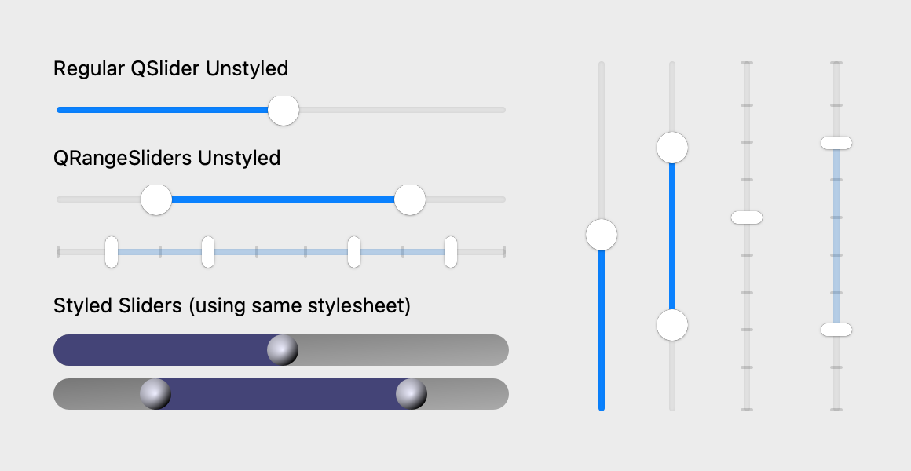
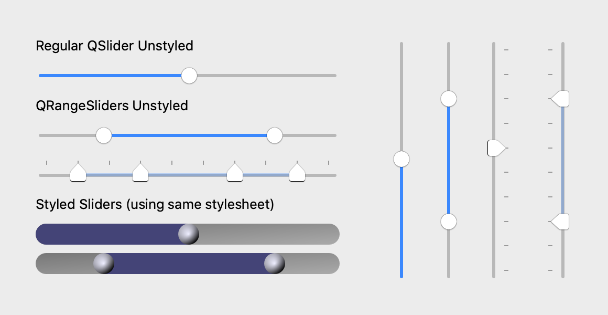
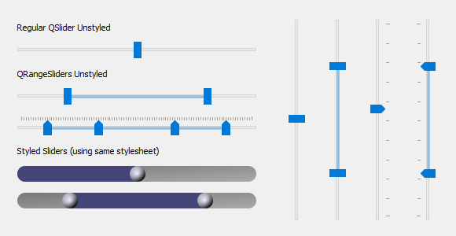
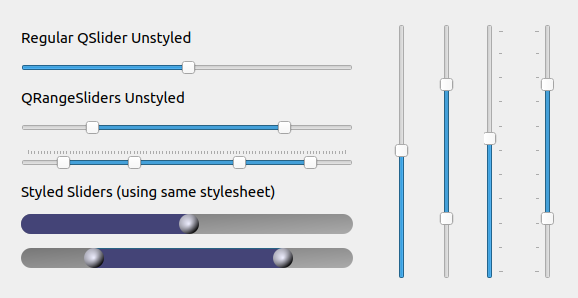

QRangeSlider¶
A slider with two or more handles, to select a range of values.


from qtpy.QtCore import Qt
from qtpy.QtWidgets import QApplication
from superqt import QRangeSlider
app = QApplication([])
slider = QRangeSlider(Qt.Orientation.Horizontal)
slider.setValue((20, 80))
slider.show()
app.exec()
QRangeSlider is a QSlider, and
has the same API, except that value() and sliderPosition() are tuples with
one int for each handle (see type changes):
- The number of handles is the length of the value:
slider.setValue([0, 10, 60, 80])makes four. - Handles can be dragged, and so can the bar between the outer handles, which moves all of them. The mouse wheel also moves all of them (with Alt held, it spreads them apart or brings them together).
- The handles, groove, and ticks are drawn with the platform's style, and can be
styled with Qt style sheets (QSS). The color of the bar is the
barColorproperty (qproperty-barColorin QSS).
These methods, in addition to those of QSlider, control the bar between the
handles:
| Getter | Setter | Default | Description |
|---|---|---|---|
barIsVisible |
setBarVisible hideBar / showBar |
True |
Whether the bar between the handles is shown. |
barMovesAllHandles |
setBarMovesAllHandles |
True |
Whether clicking on the bar moves all handles, or only the nearest one. |
barIsRigid |
setBarIsRigid |
True |
Whether the bar keeps its length when it's dragged against the minimum or maximum. |
Native styles¶
QRangeSlider and QSlider, unstyled and with the same style sheet, on each
platform:
Code for these screenshots
import os
from qtpy import QtCore
from qtpy import QtWidgets as QtW
# patch for Qt 5.15 on macos >= 12
os.environ["USE_MAC_SLIDER_PATCH"] = "1"
from superqt import QRangeSlider # noqa
QSS = """
QSlider {
min-height: 20px;
}
QSlider::groove:horizontal {
border: 0px;
background: qlineargradient(x1:0, y1:0, x2:1, y2:1, stop:0 #888, stop:1 #ddd);
height: 20px;
border-radius: 10px;
}
QSlider::handle {
background: qradialgradient(cx:0, cy:0, radius: 1.2, fx:0.35,
fy:0.3, stop:0 #eef, stop:1 #002);
height: 20px;
width: 20px;
border-radius: 10px;
}
QSlider::sub-page:horizontal {
background: qlineargradient(x1:0, y1:0, x2:1, y2:1, stop:0 #227, stop:1 #77a);
border-top-left-radius: 10px;
border-bottom-left-radius: 10px;
}
QRangeSlider {
qproperty-barColor: qlineargradient(x1:0, y1:0, x2:1, y2:1, stop:0 #227, stop:1 #77a);
}
"""
Horizontal = QtCore.Qt.Orientation.Horizontal
class DemoWidget(QtW.QWidget):
def __init__(self) -> None:
super().__init__()
reg_hslider = QtW.QSlider(Horizontal)
reg_hslider.setValue(50)
range_hslider = QRangeSlider(Horizontal)
range_hslider.setValue((20, 80))
multi_range_hslider = QRangeSlider(Horizontal)
multi_range_hslider.setValue((11, 33, 66, 88))
multi_range_hslider.setTickPosition(QtW.QSlider.TickPosition.TicksAbove)
styled_reg_hslider = QtW.QSlider(Horizontal)
styled_reg_hslider.setValue(50)
styled_reg_hslider.setStyleSheet(QSS)
styled_range_hslider = QRangeSlider(Horizontal)
styled_range_hslider.setValue((20, 80))
styled_range_hslider.setStyleSheet(QSS)
reg_vslider = QtW.QSlider(QtCore.Qt.Orientation.Vertical)
reg_vslider.setValue(50)
range_vslider = QRangeSlider(QtCore.Qt.Orientation.Vertical)
range_vslider.setValue((22, 77))
tick_vslider = QtW.QSlider(QtCore.Qt.Orientation.Vertical)
tick_vslider.setValue(55)
tick_vslider.setTickPosition(QtW.QSlider.TicksRight)
range_tick_vslider = QRangeSlider(QtCore.Qt.Orientation.Vertical)
range_tick_vslider.setValue((22, 77))
range_tick_vslider.setTickPosition(QtW.QSlider.TicksLeft)
szp = QtW.QSizePolicy.Maximum
left = QtW.QWidget()
left.setLayout(QtW.QVBoxLayout())
left.setContentsMargins(2, 2, 2, 2)
label1 = QtW.QLabel("Regular QSlider Unstyled")
label2 = QtW.QLabel("QRangeSliders Unstyled")
label3 = QtW.QLabel("Styled Sliders (using same stylesheet)")
label1.setSizePolicy(szp, szp)
label2.setSizePolicy(szp, szp)
label3.setSizePolicy(szp, szp)
left.layout().addWidget(label1)
left.layout().addWidget(reg_hslider)
left.layout().addWidget(label2)
left.layout().addWidget(range_hslider)
left.layout().addWidget(multi_range_hslider)
left.layout().addWidget(label3)
left.layout().addWidget(styled_reg_hslider)
left.layout().addWidget(styled_range_hslider)
right = QtW.QWidget()
right.setLayout(QtW.QHBoxLayout())
right.setContentsMargins(15, 5, 5, 0)
right.layout().setSpacing(30)
right.layout().addWidget(reg_vslider)
right.layout().addWidget(range_vslider)
right.layout().addWidget(tick_vslider)
right.layout().addWidget(range_tick_vslider)
self.setLayout(QtW.QHBoxLayout())
self.layout().addWidget(left)
self.layout().addWidget(right)
self.setGeometry(600, 300, 580, 300)
self.activateWindow()
self.show()
if __name__ == "__main__":
import sys
from pathlib import Path
dest = Path("screenshots")
dest.mkdir(exist_ok=True)
app = QtW.QApplication([])
demo = DemoWidget()
if "-snap" in sys.argv:
import platform
QtW.QApplication.processEvents()
demo.grab().save(str(dest / f"demo_{platform.system().lower()}.png"))
else:
app.exec_()




Subclass of QSlider
QRangeSlider inherits all of QSlider's methods, signals, and properties. Only those that superqt adds or changes are listed here.
Signals¶
valuesChanged(tuple): Emitted when the slider value has changed, with the new slider valuesslidersMoved(tuple): Emitted when sliderDown is true and the slider moves. This usually happens when the user is dragging the slider. The value is the positions of all handles.fvalueChanged(float)fsliderMoved(float)frangeChanged(float, float)
Properties¶
The color of the bar between the first and last handle.
Methods¶
Apply a QSS patch to fix sliders on macos>=12 with QT < 6.
see FAQ for more details.
barIsRigid() -> bool
Whether bar length is constant when dragging the bar.
If False, the bar can shorten when dragged beyond min/max. Default is True.
barMovesAllHandles() -> bool
Whether clicking on the bar moves all handles, or just the nearest.
setBarIsRigid(val: bool = True) -> None
Whether bar length is constant when dragging the bar.
If False, the bar can shorten when dragged beyond min/max. Default is True.
setBarMovesAllHandles(val: bool = True) -> None
Whether clicking on the bar moves all handles, or just the nearest.
setBarVisible(val: bool = True) -> None
Whether to show the bar between the first and last handle.
setSliderPosition(
pos: float | Sequence[float],
index: int | None = None,
*,
reversed: bool = False,
) -> None
Set current position of the handles with a sequence of integers.
Parameters:
-
pos(Union[float, Sequence[float]]) –The new position of the slider handle(s). If a sequence, it must have the same length as
value(). If it is a scalar, index will be used to set the position of the handle at that index. -
index(int | None, default:None) –The index of the handle to set the position of. If None, the "pressedIndex" will be used.
-
reversed(bool, default:False) –Order in which to set the positions. Can be useful when setting multiple positions, to avoid intermediate overlapping values.
Get current value of the widget as a tuple of integers.
If tracking is enabled (the default) this will be identical to value().
Type changes¶
Compared with QSlider, these methods and signals take or return one value
for each handle: